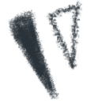

牛津生命科学协会 招新啦！ 牛津生命科学协会 Oxford Life Science Association 2022-2023学年招新工作正式启动  牛津生命科学协会 ！！招新啦！！ 牛津生命科学协会 拥有有趣灵魂的你是否正在寻找志同道合的组织？是否在生命科学领域有着一颗不安分的心？OLSA一直在你身边.我们是谁？？牛津生命科学协会Oxford Life Science Association (OLSA) 原牛津华人生命科学协会成立于2013年由英国牛津地区生命科学相关领域华人学者和学生们打造的高水平学术交流平台旨在促进学术、业界交流合作分享科研与就业动态为生命科学领域的学生学者提供科研、就业、创业和学习的桥梁我们的宗旨不同于多学科的分享平台我们专注于生命科学领域的分享和交流生物学、化学化工、医学药学以及这些学科的交叉领域是我们重点服务的对象专业是我们的使命！更好的服务是我们的追求！作为牛津大学生命科学领域最大的华人组织本协会致力于构建连接牛津地区生命科学学者学生的交流桥梁打造良好科研交流平台于此同时协会亦会安排娱乐活动为大家工作之余增添乐趣1大型学术会议由本协会承办的第26届英国华人生命科学协会年度会议于2020年圆满举行，超过300名来自中英两国的生命科学领域包括皇家科学院/工程学院院士、教授、学者、学生及相关产业从业人员参会。同时我们有幸邀请了中国驻英大使馆科技处公使街参赞蒋苏南先生、大使馆教育处一等秘书王静女士和牛津大学路德维格癌症研究所所长皇家科学院及医学院院士卢欣教授出席开幕式并致辞。2小型学术研讨会除了学术会议这类大型活动外，协会更多是举办定期的小型茶歇分享会/研讨会。届时我们邀请老师或同学分享自己的学术经验和职业相关技能。因为疫情，研讨会转为线上会议。我们这里不仅有教授大牛的分享，也欢迎学术新星来小试牛刀！如果你需要更多的peer review，来我们的研讨会可以给你最友好和专业的建议。3创新创业论坛协会致力于建立一个更广的网络，以连接中国、英国和全球的学术交流和生物创新创业项目。创新创业论坛由数十位来自的全球学术和业界专家，通过主题演讲、对话、圆桌讨论等形式，就多个生命科学领域的前瞻性话题进行深入探讨，与向往创新、 勇于开拓的全世界青年学子一起，传递热情，迎接希望。4工业学术对接除了开展专业的生命科学学术会议，把优秀的成果转化是我们更大的目标和梦想。我门帮专利成果和奇思妙想的种子寻找投资人园丁，提供土壤和阳光雨露。我们帮想从科研转入工业界或独立创业但迷茫不知所措的学生学者寻找业界前辈，获得一手经验。生命科学的networking，就来找我们吧！5社交娱乐除了为学生学者组织丰富的学术活动，我们还兼顾工作学习之余的娱乐活动，如元宵联欢晚会、春游、BBQ、篮球比赛，加强牛津地区生命科学领域学生学者的联系。来我们这儿学习第二，快乐第一。 牛津生命科学协会OLSA部门介绍外联部红酒商地产商服装商等你来撩，跨地区跨院校跨国别等你搭桥。我们的愿景是：谈笑间，樯橹灰飞烟灭; 大江东去，浪淘尽，风流人物还看今朝！新媒体部妙笔生花字字珠矶有力;奇思妙想文章跃然纸上。如果你脑洞大到漫无边际；如果你文采飞扬，无处施展才华；如果你是社交媒体达人，吸粉无数：快到碗里来！我们捧你当生命科学的网红！组织部听说敏而好学独具匠心七窍玲珑口齿伶俐耳目通达雷厉风行见多识广精明能干德艺双馨的你和组织部更配哦～wink wink～创业部高大上的企业访问，大咖云集的行业论坛，这些都是浮云。有想法来创业部，想听故事来创业部，会面俊男美女来创业部。来创业部，走别人的路让别人无路可走！秘书部如果你胆大心又细，上得厅堂下得厨房，可以与大佬们谈笑风生，也可以与小弟们共苦同甘，做支援四方的玉面小飞龙，就来试试看！秘书处是你的主场！ 不要犹豫！快来扫码填写报名表吧！我们欢迎所有牛津本科生、研究生、博士生、博士后、访问学者！pply to Join UsA 赞助商Sponsor协作单位Co-Organizer联系我们 ▌OXLIFESCISOC@GMAIL.COM或 回复公众号 ▌FACEBOOK:OCLSS或 登陆官网 ▌HTTPS://OCLSS.GITHUB.IO
牛津生命科学协会 招新啦！
牛津生命科学协会 Oxford Life Science Association 2022-2023学年招新工作正式启动
牛津生命科学协会
！！招新啦！！
牛津生命科学协会
拥有有趣灵魂的你
是否正在寻找
志同道合的组织？
是否在生命科学领域
有着一颗不安分的心？
OLSA一直在你身边
.
我们是谁？？
牛津生命科学协会
Oxford Life Science Association (OLSA)
原牛津华人生命科学协会
成立于2013年
由英国牛津地区生命科学相关领域华人学者和学生们打造的高水平学术交流平台
旨在促进学术、业界交流合作
分享科研与就业动态
为生命科学领域的学生学者提供科研、就业、创业和学习的桥梁
我们的宗旨
不同于多学科的分享平台
我们专注于
生命科学领域的分享和交流
生物学、化学化工、医学药学
以及这些学科的交叉领域
是我们重点服务的对象
专业是我们的使命！
更好的服务是我们的追求！
作为牛津大学生命科学领域
最大的华人组织
本协会致力于
构建连接牛津地区生命科学
学者学生的交流桥梁
打造良好科研交流平台
于此同时
协会亦会安排娱乐活动
为大家工作之余增添乐趣
1
大型
学术
会议
由本协会承办的第26届英国华人生命科学协会年度会议于2020年圆满举行，超过300名来自中英两国的生命科学领域包括皇家科学院/工程学院院士、教授、学者、学生及相关产业从业人员参会。同时我们有幸邀请了中国驻英大使馆科技处公使街参赞蒋苏南先生、大使馆教育处一等秘书王静女士和牛津大学路德维格癌症研究所所长皇家科学院及医学院院士卢欣教授出席开幕式并致辞。
2
小型
学术
研讨会
除了学术会议这类大型活动外，协会更多是举办定期的小型茶歇分享会/研讨会。届时我们邀请老师或同学分享自己的学术经验和职业相关技能。因为疫情，研讨会转为线上会议。我们这里不仅有教授大牛的分享，也欢迎学术新星来小试牛刀！如果你需要更多的peer review，来我们的研讨会可以给你最友好和专业的建议。
3
创新
创业
论坛
协会致力于建立一个更广的网络，以连接中国、英国和全球的学术交流和生物创新创业项目。创新创业论坛由数十位来自的全球学术和业界专家，通过主题演讲、对话、圆桌讨论等形式，就多个生命科学领域的前瞻性话题进行深入探讨，与向往创新、 勇于开拓的全世界青年学子一起，传递热情，迎接希望。
4
工业
学术
对接
除了开展专业的生命科学学术会议，把优秀的成果转化是我们更大的目标和梦想。我门帮专利成果和奇思妙想的种子寻找投资人园丁，提供土壤和阳光雨露。我们帮想从科研转入工业界或独立创业但迷茫不知所措的学生学者寻找业界前辈，获得一手经验。生命科学的networking，就来找我们吧！
5
社交
娱乐
除了为学生学者组织丰富的学术活动，我们还兼顾工作学习之余的娱乐活动，如元宵联欢晚会、春游、BBQ、篮球比赛，加强牛津地区生命科学领域学生学者的联系。来我们这儿学习第二，快乐第一。
牛津生命科学协会OLSA
部门介绍
外联部
红酒商地产商服装商等你来撩，跨地区跨院校跨国别等你搭桥。我们的愿景是：谈笑间，樯橹灰飞烟灭; 大江东去，浪淘尽，风流人物还看今朝！
新媒体部
妙笔生花字字珠矶有力;奇思妙想文章跃然纸上。如果你脑洞大到漫无边际；如果你文采飞扬，无处施展才华；如果你是社交媒体达人，吸粉无数：快到碗里来！我们捧你当生命科学的网红！
组织部
听说敏而好学独具匠心七窍玲珑口齿伶俐耳目通达雷厉风行见多识广精明能干德艺双馨的你和组织部更配哦～wink wink～
创业部
高大上的企业访问，大咖云集的行业论坛，这些都是浮云。有想法来创业部，想听故事来创业部，会面俊男美女来创业部。来创业部，走别人的路让别人无路可走！
秘书部
如果你胆大心又细，上得厅堂下得厨房，可以与大佬们谈笑风生，也可以与小弟们共苦同甘，做支援四方的玉面小飞龙，就来试试看！秘书处是你的主场！
不要犹豫！快来扫码填写报名表吧！
我们欢迎所有牛津本科生、研究生、博士生、博士后、访问学者！
pply to Join Us
A
赞助商
Sponsor
协作单位
Co-Organizer
联系我们 ▌OXLIFESCISOC@GMAIL.COM
或 回复公众号 ▌FACEBOOK:OCLSS
或 登陆官网 ▌HTTPS://OCLSS.GITHUB.IO